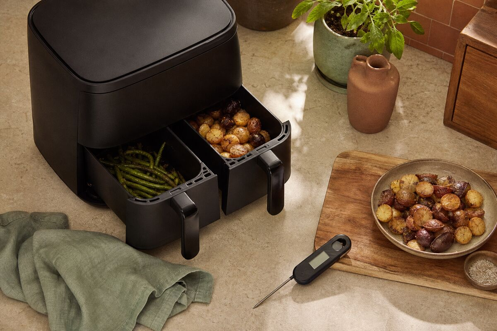

As an Amazon Associate I earn from qualifying purchases. This site contains sponsored product links. Prices and availability are shown on Amazon — check Amazon for current details. Full disclosure
5 appliances on the counter · 15 guides · Holiday 2026 · updated 2026-11-20
Three air fryers and two thermometers, on the numbers you can check yourself.
No “best of” list and no invented prices. Every capacity, footprint and weight here is copied from the manufacturer's own Amazon listing, with the link and the date beside it — and anything we could not confirm stays blank instead of being estimated.

Editorial illustration: kitchen counter with an air fryer, a probe thermometer and a board of roasted potatoes. Not a product photograph.
Two independent 3-quart baskets inside one 11.8-inch-wide shell, with a window on each so you can see both without opening them. Sync finish is the listing's own answer to two dishes landing at the same time; the baskets are listed dishwasher-safe.
Capacity 6 Quart (two 3-Qt baskets)Footprint 13.38"D x 11.81"W x 10.63"HWeight 13.3 poundsRange 200-450°F
An oven instead of a drawer: twin glass doors, wire racks, and a 24.6-litre cavity the listing says takes a 12-inch pizza. It is 14.8 inches tall and 26.5 lb, so this is the one that stays on the counter, not in a cupboard.
Capacity 26QT (24.6 Liters)Footprint 16.9"D x 15.8"W x 14.8"HWeight 26.5 Pounds
One 8-quart basket rather than two, so a single bigger batch fits in one go. The listing names a 450°F high-fry option, a shake reminder and dishwasher-safe nonstick parts, in a shell 13.5 inches wide.
Capacity 8 QuartsFootprint 12.75"D x 13.5"W x 10"HWeight 12.8 PoundsRange 200-400°F
The probe you hold and check at the end of the cook. Its listing title claims a one-second reading, ±0.5°F accuracy and IP67 waterproofing — we quote those claims, we have not measured them, and the accuracy claim is the one worth testing at home.
The probe you leave in. Three ultra-thin probes wire to a hub that reports over WiFi, and the listing says the probes are heat-safe to 1000°F — that combination is what lets you walk away and still know when to stop.
Capacity 3 probes + hubFootprint 8.43 x 4.69 x 1.93 inches (package); 14.07 ouncesRange 1000°F heat-safe probes (the listing's own claim)
Every cell above is copied from the listing linked in the last column, read 2026-11-20. No price, rating or ranking appears in this table because a static page cannot keep any of them current — why not.
This week · holiday cook
Thanksgiving falls on Thursday 26 November 2026.
Four days to settle the two questions that actually decide dinner: where the probe goes, and whether your counter can take the appliance. Both answers come from the federal food-safety guidance and the manufacturers' own listings — never from us guessing.
A listing can claim half a degree. Federal guidance says most food thermometers read accurate within 2 to 4 degrees. Here is the 30-second ice test that tells you which one you own.
Buying your first air fryer? Six checks that come straight off the listing — capacity, footprint, weight, temperature range, power, dishwasher-safe parts — so you do not regret it in a month.
Two hours, four days, 165°F: the USDA numbers that decide whether tomorrow's plate is worth reheating — and where an air fryer fits, and where it does not.
One thermometer you spot-check with, and one that stays in the food and tells you when to stop. The difference is not luxury — it is what you can walk away from.
Air fryer, convection oven, toaster oven — the names overlap. Here is what each listing in the shop actually says it does, and the one question that decides which shape you need.
Quarts are a volume, not a serving count. Here is what the listings in the shop actually state about capacity, and the honest answer to how much food a 6-quart basket really holds.
Capacity shape, temperature range, wattage, footprint, weight, cleanup: the six fields worth comparing across the three air fryers in the shop — and the marketing words that carry no information.
USDA gives the number (165°F for all poultry) and the three places to check it. Which thermometer style gets you that reading — and where each one goes — decides the rest.
A pre-click checklist for deal season: which size is on the page, what the listing contradicts about itself, and why this site shows no deal price at all.
A listing can claim half a degree. Federal guidance says most food thermometers read accurate within 2 to 4 degrees. Here is the 30-second ice test that tells you which one you own.
Two hours, four days, 165°F: the USDA numbers that decide whether tomorrow's plate is worth reheating — and where an air fryer fits, and where it does not.
One thermometer you spot-check with, and one that stays in the food and tells you when to stop. The difference is not luxury — it is what you can walk away from.
USDA gives the number (165°F for all poultry) and the three places to check it. Which thermometer style gets you that reading — and where each one goes — decides the rest.
A pre-click checklist for deal season: which size is on the page, what the listing contradicts about itself, and why this site shows no deal price at all.
One message per new comparison. No offers, no countdowns.
No newsletter is running yet, so this form sends your address nowhere — it is here so the decision about a provider can be made in the open. Until it is made, the RSS feed delivers every new guide, and the disclosure lists what this site collects.